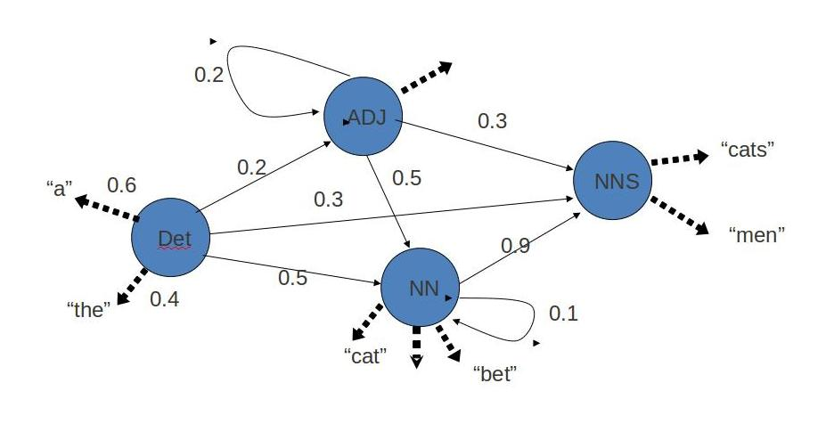

POS Tagging - Hidden Markov Model
A Hidden Markov Model (HMM) is a statistical Markov model in which the system being modeled is assumed to be a Markov process with unobserved (hidden) states.In a regular Markov model (Markov Model (Ref: http://en.wikipedia.org/wiki/Markov_model)), the state is directly visible to the observer, and therefore the state transition probabilities are the only parameters. In a hidden Markov model, the state is not directly visible, but output, dependent on the state, is visible.

Hidden Markov Model has two important components-
1)Transition Probabilities: The one-step transition probability is the probability of transitioning from one state to another in a single step.
2)Emission Probabilties: : The output probabilities for an observation from state. Emission probabilities B = { bi,k = bi(ok) = P(ok | qi) }, where ok is an Observation. Informally, B is the probability that the output is ok given that the current state is qi
For POS tagging, it is assumed that POS are generated as random process, and each process randomly generates a word. Hence, transition matrix denotes the transition probability from one POS to another and emission matrix denotes the probability that a given word can have a particular POS. Word acts as the observations. Some of the basic assumptions are:
1. First-order (bigram) Markov assumptions:
a. Limited Horizon: Tag depends only on previous tag
P(t<sub>i+1</sub> = t<sub>k</sub> | t<sub>1</sub>=t<sub>j1</sub>,.....,t<sub>i</sub>=t<sub>ji</sub>) = P(t<sub>i+1</sub> = t<sub>k</sub> | t<sub>i</sub> = t<sub>j</sub>)
b. Time invariance: No change over time
P(t<sub>i+1</sub> = t<sub>k</sub> | t<sub>i</sub> = t<sub>j</sub>) = P(t<sub>2</sub> = t<sub>k</sub> | t<sub>1</sub> = t<sub>j</sub>) = P(t<sub>j</sub> -> t<sub>k</sub>)
2. Output probabilities:
- Probability of getting word wk for tag tj: P(wk | tj) is independent of other tags or words!
Calculating the Probabilities
Consider the given toy corpus
EOS/eos
They/pronoun
cut/verb
the/determiner
paper/noun
EOS/eos He/pronoun
asked/verb
for/preposition
his/pronoun
cut/noun.
EOS/eos
Put/verb
the/determiner
paper/noun
in/preposition
the/determiner
cut/noun
EOS/eos
Calculating Emission Probability Matrix
Count the no. of times a specific word occus with a specific POS tag in the corpus. Here, say for "cut"
count(cut,verb)=1
count(cut,noun)=2
count(cut,determiner)=0
and so on zero for other tags too.
count(cut) = total count of cut = 3
Now, calculating the probability Probability to be filled in the matrix cell at the intersection of cut and verb
P(cut/verb)=count(cut,verb)/count(cut)=1/3=0.33
Similarly, Probability to be filled in the cell at he intersection of cut and determiner
P(cut/determiner)=count(cut,determiner)/count(cut)=0/3=0
Repeat the same for all the word-tag combination and fill the
Calculating Transition Probability Matrix
Count the no. of times a specific tag comes after other POS tags in the corpus. Here, say for "determiner"
count(verb,determiner)=2
count(preposition,determiner)=1
count(determiner,determiner)=0
count(eos,determiner)=0
count(noun,determiner)=0
and so on zero for other tags too.
count(determiner) = total count of tag 'determiner' = 3
Now, calculating the probability Probability to be filled in the cell at he intersection of determiner(in the column) and verb(in the row)
P(determiner/verb)=count(verb,determiner)/count(determiner)=2/3=0.66
Similarly, Probability to be filled in the cell at he intersection of determiner(in the column) and noun(in the row)
P(determiner/noun)=count(noun,determiner)/count(determiner)=0/3=0
Repeat the same for all the tags
Note: EOS/eos is a special marker which represents End Of Sentence.